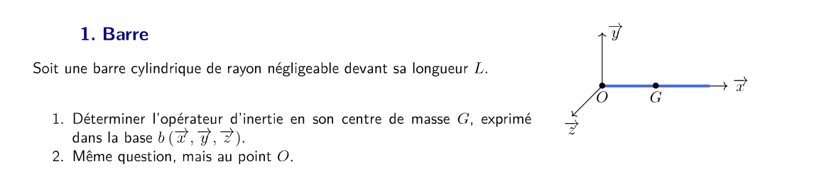
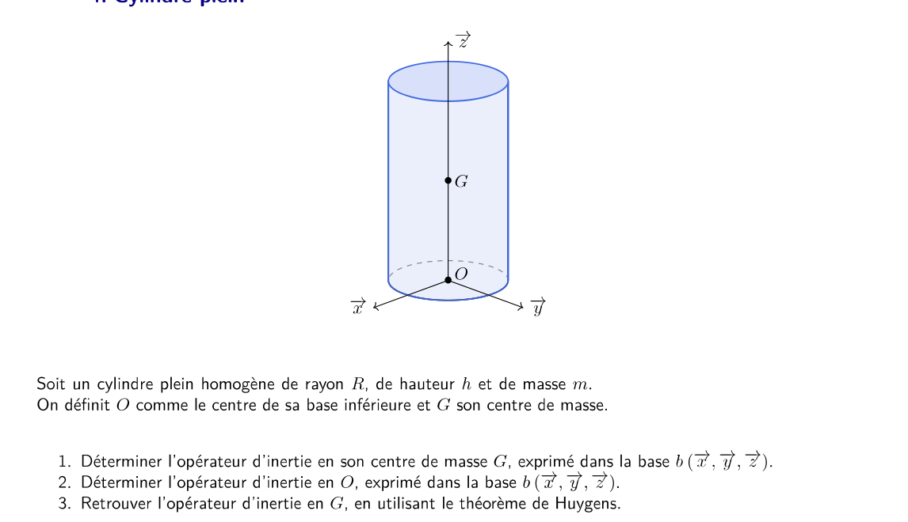
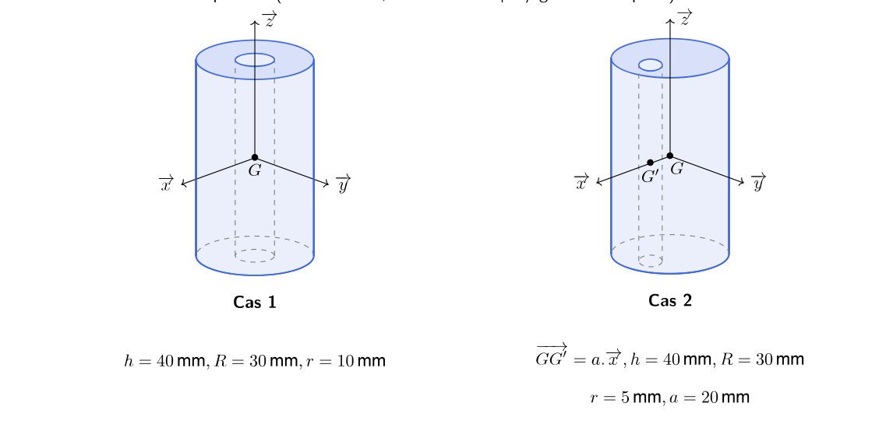

AM2 · SI · Chapitre 3 — Dynamique du solide (TD, exercice 1)
Calcul de matrices d'inertie : correction détaillée
Premier exercice du TD « Dynamique du solide (C03) », dans l'ordre du TD : barre, rectangle mince, quart de disque,
cylindre plein, cylindre percé. Pour chaque question : l'énoncé en image, la démarche, le calcul complet, puis les résultats du corrigé.
L'objectif est de savoir calculer une matrice d'inertie, ce qui sert ensuite dans tout le PFD.
1. Avant de commencer : l'essentiel
L'opérateur d'inertie
Pour un solide \(S\) de masse \(m\), l'opérateur d'inertie en un point \(P\), exprimé dans une base \(b(\vec x,\vec y,\vec z)\), est une matrice symétrique :
Les termes hors diagonale sont \(F=\int_S xy\,dm\), \(E=\int_S xz\,dm\), \(D=\int_S yz\,dm\), avec le signe moins devant dans la matrice.
Trois règles qui simplifient presque tout
Symétrie par rapport à un plan \((G,\vec x,\vec y)\) : les termes \(E\) et \(D\) sont nuls (les masses se compensent).
Solide de révolution d'axe \(\vec z\) : \(A=B\), et la matrice est diagonale.
Théorème de Huygens : pour passer du centre de masse \(G\) à un point \(P\) quelconque, avec \(\overrightarrow{PG}=(d_x,d_y,d_z)\) :
\(\bar{\bar I}(P,S)=\bar{\bar I}(G,S)+m\begin{pmatrix}d_y^2+d_z^2&-d_xd_y&-d_xd_z\\-d_xd_y&d_x^2+d_z^2&-d_yd_z\\-d_xd_z&-d_yd_z&d_x^2+d_y^2\end{pmatrix}\).
Méthode commune aux 5 exercices
Pour une pièce homogène, on écrit \(dm=\rho\,dV\) (ou \(\sigma\,dS\) pour une surface), on intègre \(x^2\), \(y^2\), \(z^2\) ou \(xy\) sur la pièce,
et on exprime le résultat avec la masse \(m\). Choisir le repère pour que les intégrales soient simples (centre et axes de symétrie).
2. Exercice 1 — Barre

Énoncé de l'exercice 1 : barre de longueur \(L\), de rayon négligeable devant \(L\), centre de masse \(G\).
Q1Opérateur d'inertie en \(G\)
La question en clair
Déterminer l'opérateur d'inertie en \(G\), exprimé dans la base \(b(\vec x,\vec y,\vec z)\).
Démarche
Où est la matière ? Elle est uniquement sur l'axe \((G,\vec x)\). Donc \(y\) et \(z\) sont nuls partout : \(y^2\), \(z^2\), \(yz\), \(xy\), \(xz\) sont nuls.
Conséquence : \(A=0\) (car \(A=\int(y^2+z^2)dm=0\)), et \(D=E=F=0\).
Symétrie : \((G,\vec y)\) et \((G,\vec z)\) jouent le même rôle, donc \(B=C\).
Calcul de \(B\) : \(B=\int x^2dm\) avec \(dm=\dfrac{m}{L}dx\), \(x\in[-L/2,L/2]\).
La question en clair
Même question, au point \(O\) (extrémité de la barre).
Démarche
On garde le résultat en \(G\) et on applique Huygens. Ici \(\overrightarrow{OG}=\dfrac{L}{2}\vec x\), donc \(d_x=L/2\), \(d_y=d_z=0\).
Huygens ajoute \(m(d_x^2+d_z^2)\) à \(B\) (axe \(\vec y\)) et \(m(d_x^2+d_y^2)\) à \(C\) (axe \(\vec z\)). Ici \(d_z=0\) et \(d_y=0\), donc on ajoute \(m\,d_x^2\) à \(B\) et à \(C\).
Vérification (théorème de Guldin)
Le volume engendré par la rotation du quart de disque autour de l'axe \(x\) (tour complet) vaut \(V=2\pi\,y_G\cdot S\).
Pour une demi-sphère de rayon \(R\) il vaut \(\tfrac{2}{3}\pi R^3\), et \(S=\tfrac{\pi R^2}{4}\) : on retrouve \(y_G=\dfrac{V}{2\pi S}=\dfrac{4R}{3\pi}\).
Q2Opérateur d'inertie en \(O\)
La question en clair
Déterminer l'opérateur d'inertie en \(O\).
Démarche
La pièce est une plaque d'épaisseur nulle : \(C=A+B\).
\(B=\int x^2dm\) : en polaires, \(x^2=r^2\cos^2\theta\), donc on intègre \(\cos^2\theta=\dfrac{1+\cos2\theta}{2}\).
\(F=\int xy\,dm\) : on a \(\cos\theta\sin\theta=\dfrac{\sin2\theta}{2}\) et l'intégrale en \(\theta\) de \(\sin2\theta\) donne un terme \(\cos\) qui se simplifie.
Le terme hors diagonale est \(-F\) avec \(F=\dfrac{mR^2}{2\pi}\) : le signe moins vient de la convention de la matrice.
Q3Opérateur d'inertie en \(G\)
La question en clair
Déterminer l'opérateur d'inertie en \(G\) (centre de gravité trouvé en Q1).
Démarche
On applique Huygens depuis \(O\) vers \(G\), avec \(\overrightarrow{OG}=d(\vec x+\vec y)\), \(d=\dfrac{4R}{3\pi}\). Donc \(\overrightarrow{GO}=(-d,-d,0)\).
Les produits \(d_xd_y=d^2=\dfrac{16R^2}{9\pi^2}\) apparaissent hors diagonale, et \(d_y^2+d_z^2=d^2\), \(d_x^2+d_z^2=d^2\), \(d_x^2+d_y^2=2d^2\).
On écrit \(\bar{\bar I}(G)=\bar{\bar I}(O)-m\,(\text{matrice de Huygens})\).
Ordre de grandeur
\(9\pi^2-64\approx24{,}8\) et \(64-18\pi\approx7{,}5\) : la matrice est bien définie positive (valeurs propres positives), comme il se doit pour une inertie.
5. Exercice 4 — Cylindre plein

Énoncé de l'exercice 4 : cylindre plein homogène, rayon \(R\), hauteur \(h\), masse \(m\). \(O\) = centre de la base inférieure, \(G\) = centre de masse.
Q1Opérateur d'inertie en \(G\)
La question en clair
Déterminer l'opérateur d'inertie en \(G\), dans la base \(b(\vec x,\vec y,\vec z)\).
Démarche
Révolution autour de \((O,\vec z)\) : \(A=B\), et la matrice est diagonale.
Axe z : \(C=\int(x^2+y^2)dm=\int r^2dm\) (ici \(r\) est la distance à l'axe \(z\)).
Axe x : \(A=\int(y^2+z^2)dm=\int y^2dm+\int z^2dm\). Par symétrie de révolution, \(\int y^2dm=\dfrac{C}{2}\) (car \(x^2+y^2\) se répartit également entre \(x\) et \(y\)). Donc \(A=\dfrac{C}{2}+\int z^2dm\).
Calcul de \(C\) : en cylindriques, \(dm=\dfrac{m}{\pi R^2h}r\,dr\,d\theta\,dz\), avec \(z\in[-h/2,h/2]\) (on part de \(G\)).
On retrouve bien le résultat directement obtenu en \(G\) (Q1).
Réponse
Même résultat qu'en Q1 : \(A_G=B_G=\dfrac{mR^2}{4}+\dfrac{mh^2}{12}\), \(C_G=\dfrac{mR^2}{2}\).
6. Exercice 5 — Cylindre percé

Énoncé de l'exercice 5 : cylindre de hauteur \(h\) et de rayon \(R\), avec un perçage de rayon \(r\). Cas 1 : perçage centré. Cas 2 : perçage décalé de \(a\) selon \(\vec x\) (\(\overrightarrow{GG'}=a\vec x\)).
QOpérateur d'inertie en \(G\) : cas 1 (perçage centré) et cas 2 (perçage décalé)
La question en clair
Connaissant la matrice d'un cylindre plein de hauteur \(h\) et de rayon \(R\), déterminer celle du cylindre percé au point \(G\).
Données : \(h=40\) mm, \(R=30\) mm. Cas 1 : \(r=10\) mm. Cas 2 : \(r=5\) mm, \(a=20\) mm.
Démarche (commune aux deux cas)
Soustraction : le cylindre percé \(S\) est le cylindre plein \(P\) (rayon \(R\)) moins le cylindre \(C\) (rayon \(r\)) qu'on a enlevé. Donc \(\bar{\bar I}(G,S)=\bar{\bar I}(G,P)-\bar{\bar I}(G,C)\) pour les deux termes, avec les masses \(m_P\) et \(m_C\).
Masses : \(m_P=\pi\rho hR^2\), \(m_C=\pi\rho hr^2\), donc \(m=m_P-m_C=\pi\rho h(R^2-r^2)\).
Inerties du plein (Ex. 4) : \(I_{xx}=I_{yy}=\dfrac{m R^2}{4}+\dfrac{mh^2}{12}\), \(I_{zz}=\dfrac{mR^2}{2}\), à remplacer par \(m_P\) puis \(m_C\) (avec \(r\)).
Cas 1 (perçage centré). Les deux cylindres ont le même centre \(G\). On soustrait terme à terme :
Cas 2 (perçage décalé de \(a\) selon \(\vec x\)). Le cylindre enlevé est centré en \(G'=G+a\vec x\). Il faut donc :
calculer l'inertie du cylindre enlevé \(C\) en son propre centre \(G'\) (formules de l'Ex. 4 avec \(r\)) ;
la ramener en \(G\) par Huygens : \(m_C\,a^2\) s'ajoute aux axes perpendiculaires à \(\overrightarrow{GG'}=a\vec x\), c'est-à-dire \(\vec y\) et \(\vec z\), mais pas \(\vec x\).
On obtient donc \(\bar{\bar I}(G,S)=\bar{\bar I}(G,P)-\bar{\bar I}(G',C)-m_C\begin{pmatrix}0&0&0\\0&a^2&0\\0&0&a^2\end{pmatrix}\), soit, avec \(m_C\,a^2=\dfrac{m\,r^2a^2}{R^2-r^2}\) :
Ces valeurs supposent une masse volumique \(\rho\approx7\,800\) kg·m⁻³ : c'est celle qui reproduit \(m=784{,}14\) g avec \(\pi\rho h(R^2-r^2)\), \(h=40\) mm et \(R^2-r^2=800\) mm².
⚠️ Deux points du corrigé à noter
Le corrigé écrit \(m_c=2\pi\rho hr^2\), probablement une coquille (à vérifier sur le PDF) : avec \(m_c=\pi\rho hr^2\) (aire d'un disque de rayon \(r\)), on retrouve bien \(m=m_P-m_c=\pi\rho h(R^2-r^2)\), qu'il utilise ensuite. Le calcul ci-dessus est fait avec \(\pi\rho hr^2\).
Pour le cas 2, en recalculant \(B\) à partir de \(A=312{,}68\) : \(B=312{,}68-9{,}80\approx302{,}9\) kg·mm² (le corrigé écrit 302,6). C'est un écart d'arrondi, sans conséquence.
7. À retenir
Barre : \(mL^2/12\) au centre, \(mL^2/3\) à l'extrémité.